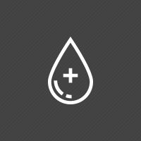

혁신적 신약개발을 통해 인류의 행복을 추구합니다
사업소개
혈액제제 소개
혈액제제는 사람의 혈장을 수집하여 분획, 정체, 바이러스 불활화 및 제거공정을 거쳐서 생산된 의약품을 말하며
알부민 제제, 면역 글로불린 제제, 혈액응고인자 제제, 항트롬빈Ⅲ 제제 등이 있습니다.
생산공정
원료혈장 수집
철저한 선정/배제 기준을 통해 선별된 헌혈자로부터 혈장을 수집한 후, 다양한 시험을 통해 바이러스에 대한
안전성이 확보된 혈장만을 원료로 사용합니다.
혈장풀링
헌혈자로부터 수집된 혈장은 생산을 위해 풀링(pooling)이라는 단계를 거치며, 추가적인 시험을 통해 바이러스에
대한 안전성을 재확인합니다.

분획/정제 및 바이러스 불활화/제거
풀링된 혈장은 여러 단계의 분획/정제 공정을 통해 고순도 혈액제제로 제조되며 최소 2단계 이상의 바이러스
불활화/제거 공정을 거쳐 제품의 안전성을 향상시킵니다.
완제의약품
SK플라즈마의 엄격한 제조 및 품질 관리를 통해 생산된 완제의약품은 국가출하승인 절차를 통해 의료진에게
공급되며, 철저한 유통 관리 및 시판 후 안전관리 등을 통해 품질 및 안전성을 확보합니다.
생산 의약품
-
알부민
화상, 신장병, 간질환 등에
의해 혈액 내 알부민 부족,
과다 출혈에 따른 쇼크 치료 -
면역글로불린
면역글로불린이 부족한
선천적 면역결핍질환 및
다양한 자가면역질환의 치료 -
혈액응고인자
선천적으로 혈액응고
인자가 부족한 혈우병
환자의 출혈 치료/예방 -
항트롬빈Ⅲ
선천적 혹은 후천적으로
항트롬빈III가 저하된 환자의
항트롬빈III 결핍 치료/예방